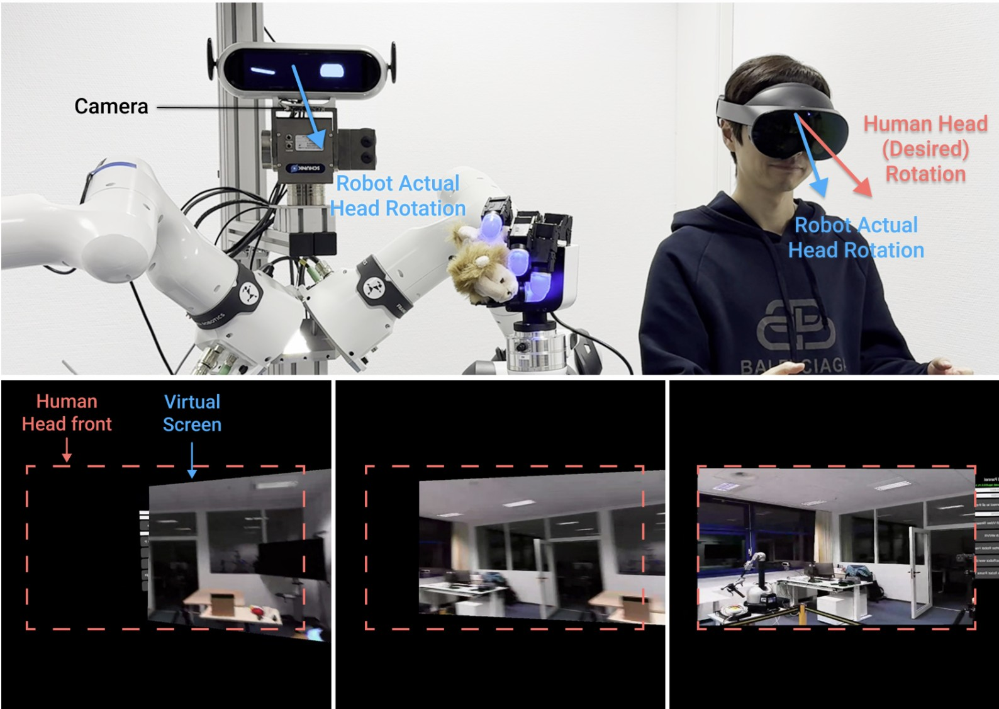

01 · Demonstration collection
Teleoperation for VLA Training
The operator teleoperates the robot to produce embodied trajectories and synchronized visual-action demonstrations for training the vision-language-action policy.
Mixed-Reality Robot Teleoperation
A mixed-reality teleoperation platform that turns embodied human demonstrations into robot learning data while supporting physical human-robot interaction, expressive facial control, and a more comfortable operator experience.
Robot learning workflow
The same interface closes the loop from embodied data collection to learned autonomy: an operator first demonstrates the task through teleoperation, then the trained VLA policy executes it at inference time.
01 · Demonstration collection
The operator teleoperates the robot to produce embodied trajectories and synchronized visual-action demonstrations for training the vision-language-action policy.
02 · Learned execution
After training on the teleoperation demonstrations, the learned policy executes the task at inference time, translating visual observations and task intent into robot actions.
A versatile interaction platform
The teleoperation stack also serves as a research tool for studying embodied interaction and transferring expressive human behavior to a social robot.
Physical HRI
The system enables controlled physical human-robot interaction studies, including close-proximity object handover between a remotely embodied operator and a participant.
Expressive embodiment
Facial motion from the operator is retargeted to the robot in real time, extending embodiment from physical control to expressive social cues during interaction.
Operator comfort
A local view-compensation mechanism accounts for the difference between the operator's desired head pose and the robot head's actual response, making immersive teleoperation more visually stable.
Compensated first-person view
This first-person recording demonstrates the teleoperation view after local virtual-screen compensation. As the robot head follows the operator, the displayed camera stream is reoriented to reduce visual mismatch and help prevent motion sickness.

Top: The MR headset subscribes to the actual rotation of the robot head and computes the rotation difference with respect to the human head's desired rotation.
Bottom: The teleoperation view locally compensates the virtual screen orientation using this difference. Aligning the displayed video stream with the robot head pose reduces visual mismatch and helps mitigate motion sickness.